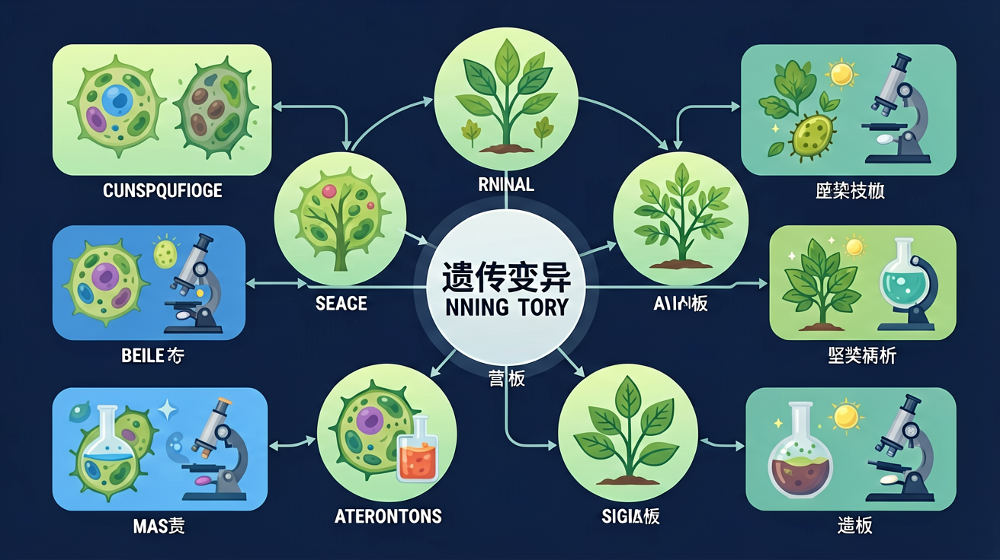
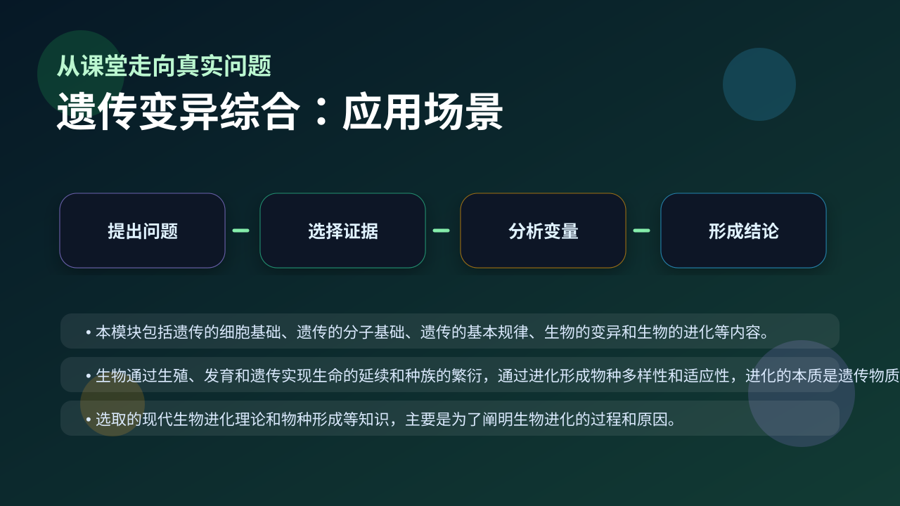

Gallery v1.0.0 · skill v7.14
遗传信息怎样被保存、表达、传递，又怎样影响性状？

已经知道：此前已学习基因、DNA和染色体的基本关系，掌握显隐性遗传规律，能解释豌豆实验中的性状分离现象
但问题是：面对多基因遗传病时，学生常混淆'基因重组'与'染色体变异'的作用机制，难以理解环境因素如何通过表观遗传影响性状表达
所以学：当遗传咨询师分析一个家族中既有红绿色盲又有高血压的复杂遗传史时，需要综合运用变异类型知识解释不同遗传模式
先选一个卡点。后面的例子、互动和 AI 学伴都会围绕它给你最小提示。
选择或输入后，本课会围绕你的问题展开。
下列哪种情况会导致基因库改变？
现象入口：题目通常会给出与遗传变异综合有关的实验现象、数据曲线或生活情境。
机制解释：遗传变异综合的本质不是一个名词，而是一组可以解释生命现象的结构—过程—结果关系。
证据抓手：判断遗传变异综合时，要回到变量变化、实验对照、曲线趋势或结构证据。
变量线索：输入变量、调节强度、时间和环境条件。做题时先找变量，再判断机制，最后写证据。
观察减数分裂前期同源染色体联会时发生的交叉互换现象
分解基因重组过程：减Ⅰ前期同源染色体非姐妹染色单体片段交换
染色体结构变异与基因重组的本质差异在于是否改变基因的排列顺序
应用单倍体育种技术将花粉染色体数目减半培育纯合植株
情境：在一个新情境中，如果只写“这是遗传变异综合”而没有说明机制，答案通常不完整。
作答路径：现象：某植物出现花瓣颜色变异。机制：可能是控制花色的基因发生突变（如碱基替换）或染色体片段缺失。证据：若子代稳定遗传且PCR检测到基因序列改变则为突变，若显微镜观察到染色体结构异常则为染色体变异
评分提醒：典型失分：混淆基因重组与突变的核心区别（是否产生新基因），或未结合具体生物学证据判断变异类型
先用 PhET 观察转录和翻译如何把遗传信息转成蛋白质，再回到本课的 Canvas 任务，把“信息流”与 遗传变异综合 联系起来。
💡 操作提示：拖动调控元件，观察 mRNA 和蛋白质产量变化，思考“表达量变化”和“性状变化”之间的证据链。
基因突变产生新基因（根本来源），基因重组产生新基因型（主要来源），染色体变异改变结构或数目——三者贡献不同。
💡 探究任务：对比三类变异在自然界新表型来源中的相对贡献，解释为什么说突变是“根本来源”而重组是“主要来源”。
常见错误是把遗传变异综合当成孤立定义背诵，忽略了证据链。
只说“增加/减少”不够，要写清改变的是 输入变量、调节强度、时间和环境条件 中的哪一个。
没有实验现象、曲线趋势或结构证据，答案就像猜测。
下列属于染色体结构变异的是？
视频用语音和动态画面回顾本课主线：问题情境 → 机制模型 → 证据判断 → 迁移应用。

请把遗传变异综合迁移到实验探究、健康、生产或生态问题中，写出现象、机制和证据。
提交后会检查你的解释是否包含现象、机制和变量。
如果学生只说出概念名称，继续追问：题干里哪个证据最关键？这个证据对应分子、细胞、个体还是生态系统层级？如果改变 输入变量、调节强度、时间和环境条件 中的一个条件，结果会怎样？这三问能把答案从背诵推进到科学解释。
列举基因重组的两种具体发生时期
分析太空育种获得的抗病水稻主要利用了哪种变异机制
设计利用染色体变异培育无籽西瓜的实验方案
下列哪种变异类型会产生新的等位基因？
学习小结：遗传变异三大来源中，基因突变通过碱基改变产生新基因，基因重组实现现有基因新组合，染色体变异改变遗传物质剂量或结构
先独立作答，再点选项查看对错与错因。
在小麦抗病育种实验中，抗病性较强的小麦植株占多少比例？
小麦抗病性的差异主要来源于什么？
在小麦抗病育种实验中，性状分离比最可能符合什么规律？
小麦抗病性实验中，中等抗病性的植株占____%。
答案：50
根据情境描述，100株小麦中有50株具有中等抗病性，因此比例为50%。
基因重组是____的重要来源。
答案：遗传变异
基因重组通过产生新的基因组合，是遗传变异的重要来源。
设计一个实验，探究小麦抗病性的遗传规律。
❓ 为什么我爸妈都是双眼皮，我却是单眼皮？
❓ 转基因食品到底安不安全？
❓ 近亲结婚生的孩子为啥容易得遗传病？
学完这一课，这些问题你都能自信地回答。
✅ 只有生殖细胞变异可遗传，体细胞变异不可遗传
💡 混淆了可遗传变异与获得性性状
✅ 重组是原有基因重新组合，突变是基因结构改变
💡 未理解变异的分子机制差异
口诀：基因突变碱基变，重组交换染色体连，数目结构异常变，三类变异要记全
类比：基因就像乐高积木，突变是拼错零件，重组是重新组合，染色体变异是整盒丢失